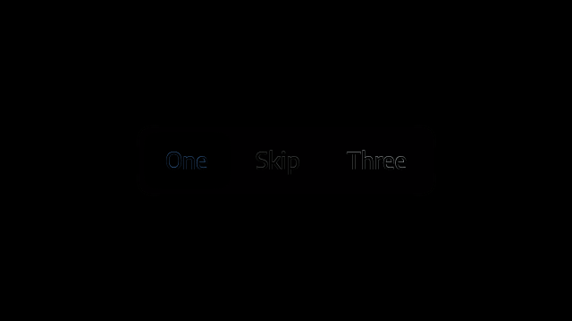
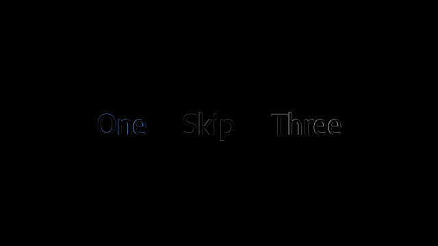
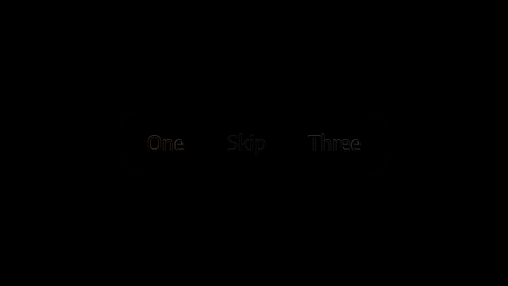
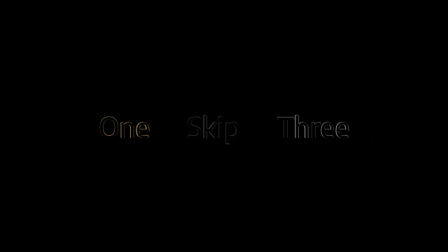
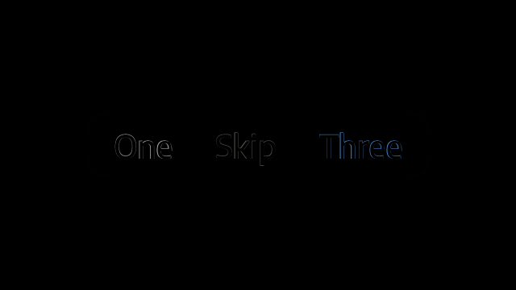
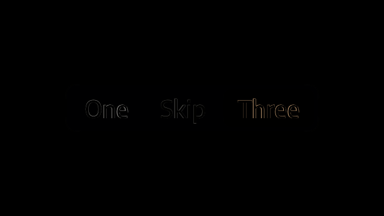

segments-a-dark-text1.0-offscreen-dpr1.0.png
failed: 5007 changed pixels; maximum channel error 175
No resizing, ignored regions, or visual exceptions. Raw differences remain open.
failed: 5007 changed pixels; maximum channel error 175
failed: 19283 changed pixels; maximum channel error 126

failed: 6295 changed pixels; maximum channel error 117
failed: 24177 changed pixels; maximum channel error 191

failed: 4982 changed pixels; maximum channel error 175
failed: 19261 changed pixels; maximum channel error 103

failed: 6281 changed pixels; maximum channel error 106
failed: 24147 changed pixels; maximum channel error 205

failed: 4777 changed pixels; maximum channel error 163
failed: 18242 changed pixels; maximum channel error 128
failed: 5953 changed pixels; maximum channel error 117
failed: 22662 changed pixels; maximum channel error 192

failed: 4756 changed pixels; maximum channel error 163
failed: 18207 changed pixels; maximum channel error 116
failed: 5943 changed pixels; maximum channel error 106
failed: 22628 changed pixels; maximum channel error 205
